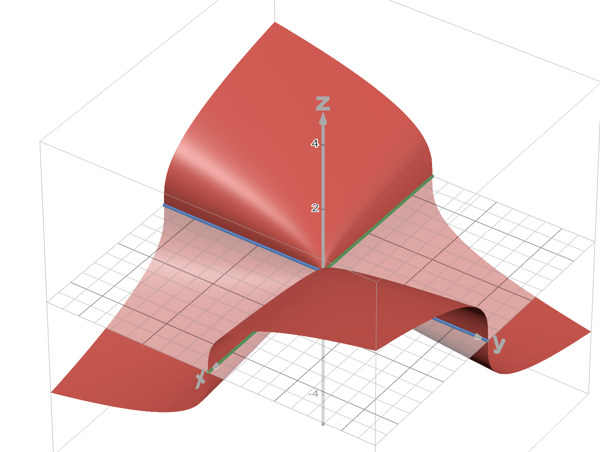

All log structures are assumed to be fine.
Exercise 1
For \((X,D)\) a toric variety, show that \(\Sigma(X)\) is equal to the underlying cone complex structure on the fan for \((X,D)\).
Proof
This one actually confused me for a while, and it was because I didn’t read the question carefully: this is definitely not saying that the tropicalization \(\Sigma(X)\) recovers the fan of \(X\); it only recovers the cone complex associated to the fan. The cone complex throws away a decent bit of information; for instance, the cones \(\cone(e_1,e_2)\) and \(\cone(e_1 + de_2, e_1)\) in \(N = \mathbb Z^2\) are isomorphic as cone complexes but produce non-isomorphic toric varieties.
Let’s start with the affine case. Let \(X\) be the affine toric variety associated to \(\sigma\subset N_\mathbb R\) some strictly convex rational polyhedral cone in a lattice \(N_\mathbb R\), generated as a cone by primitive rays \(\rho_1,...,\rho_d \in N\). Then
- set \(m_i\) to be an element of \(\sigma^\vee\) such that \(\langle m_i, \rho_i\rangle = 0\) and \(\langle m_i, \rho_j\rangle \geq 0\) for all other \(j\)
- the toric divisor is then \(D = D_1 + ... + D_d\) where \(D_i = V(\chi^{m_i})\)
- the sheaf of monoids is \(\mathcal M = j_*\mathcal O^\times_{X\setminus D} \cap \mathcal O_X = \mathbb C^\times \cup \{\text{monomials in }\chi^{m_i}\}\) by the definition of the divisorial log structure
- the ghost sheaf is \(\overline {\mathcal M} = \{\text{monomials in }\chi^{m_i} \text{ up to scaling}\}\).
Let \(\eta_{\beta}\) be the generic point of the intersection \(D_{\beta_1}\cap ... \cap D_{\beta_j}\) for a \(j\)-subset \(\beta \in \binom{[d]}{j}\) of \([d]\). (Note that many of these intersections may be smaller than expected, take the cone over a pentagon for instance. Two divisors corresponding to rays which aren’t part of a common face will intersect to give a point rather than a line.) Then \[\overline{\mathcal M}_{\eta_\beta} = \{\text{monomials in }\chi^{m_{\beta_1}},...,\chi^{m_{\beta_j}} \text{ up to scaling}\}\cong \mathbb N^\beta \cong \mathbb N^j.\] If \(\eta_\beta \in \overline{\{\eta_\gamma\}}\), i.e. if \(\gamma\) is a “bigger” generic point, then \(\gamma \subset \beta\) and the generization map \(\overline{\mathcal M}_{\eta_\beta} \to \overline{\mathcal M}_{\eta_\gamma}\)is projection throwing away those coordinates of \(\beta\) not appearing in \(\gamma\). Dualizing gives us face maps \[\sigma_{\gamma} \to \sigma_{{\beta}}\] where \(\sigma_{\beta} := \Hom(\overline{\mathcal M}_{\eta_\beta}, \mathbb R_{\geq 0})\). Thus, the tropicalization process gives us
- one cone \(\sigma_\beta\)for each non-empty intersection \(D_{\beta_1}\cap ... \cap D_{\beta_j}\)
- a face map \(\sigma_\gamma \to \sigma_\beta\) whenever \(\eta_\beta\) is a specialization of \(\eta_\gamma\) (and hence is a larger cone in the fan)
This exactly recovers the cone complex structure of \(\sigma\), our original cone.
In the general case of a toric variety \(X\) associated to a fan, let \(\sigma_1,...,\sigma_n\) be the collection of maximal cones. Tropicalization produces the same system of cones and maps as described above as well as additional face maps identifying the maximal cones along common faces.
Remark
Consider \(\mathbb A^2_{xy}\) with its toric log structure given by \(D = D_x \cup D_y\). Let \(0\) be the origin and \(\eta\) be the generic point. I’m often confused whether \(\overline{\mathcal M}_0 = \mathbb N^2\) or \(\overline{\mathcal M}_\eta = \mathbb N^2\) (it’s the former, the latter is \(\{0\}\)). A good way to remember this is the following slogan, which should be true of all fine log structures:
“if \(x\) is a closed point and \(\eta\) is the generic point of the smallest strata containing it, then \(\overline{\mathcal M}_x = \overline{\mathcal M}_\eta\)”.
Away from \( D\), \(\mathcal O_X^\times\) is exactly the same as \(\mathcal O_{X\setminus D}^\times\), and hence the ghost sheaf is trivial. At the intersection of all the divisors, the functions defining the divisors of course vanish, and hence appear in \(\mathcal O_{X\setminus D}^\times\) but not in \(\mathcal O_X^\times\).
Exercise 2
A cone complex \(\Sigma\) admits a real vector space of piecewise linear functions, denoted by \(PL(\Sigma)\). Show that we have the equality \[PL(\Sigma(X)) = H^0(X, \overline{\mathcal M}^{gp}_X )\otimes_{\mathbb Z} \mathbb R.\]
Proof
Note first that since \(X\) is a fine log scheme for each \(\sigma_\eta \in \Sigma(X)\) we can find an embedding \[\sigma_\eta = \Hom_{mon}(\overline{\mathcal M}_\eta, \mathbb R_{\geq 0}) \hookrightarrow \Hom_{grp}(\overline{\mathcal M}_\eta^{grp}, \mathbb R) = \mathbb R^n.\] This embedding exists because fine log structures are integral and the \(n\) is finite since fine log structures are locally finitely generated. We hence identify \(\sigma_\eta\) with its embedding inside the real vector space \(\mathbb R^n\), hence it makes sense to talk about a “linear function on \(\sigma\)”. Note also that every linear function on \(\sigma\) is the restriction of a linear function \(\mathbb R^n \to \mathbb R\) to \(\sigma\).
By a “piecewise linear function on \(\Sigma(X)\)” we mean a continuous function \(f:|\Sigma(X)|\to \mathbb R\) so that
- the restriction \(f|_\sigma\) is linear for each \(\sigma \in \Sigma(X)\) and
- the linear functions comprising \(f\) agree along faces – this is compatibility with gluing.
Let’s start with a single cone \(\sigma = \Hom(\overline{\mathcal M}_\eta, \mathbb R_{\geq 0})\). By our initial remarks, a linear function on \(\sigma\) is an element \(f\in \Hom(\Hom(\overline{\mathcal M}_\eta^{grp}, \mathbb R), \mathbb R).\) We have isomorphisms \[\Hom(\overline{\mathcal M}_\eta^{grp}, \mathbb R)\cong \Hom(\overline{\mathcal M}_\eta^{grp}, \mathbb Z)\otimes_{\mathbb Z}\mathbb R = (\overline{\mathcal M}^{grp}_\eta)^\vee \otimes_{\mathbb Z} \mathbb R\] so \[\begin{aligned} \Hom(\Hom(\overline{\mathcal M}_\eta^{grp}, \mathbb R), \mathbb R) &\cong \Hom((\overline{\mathcal M}^{grp}_\eta)^\vee \otimes_{\mathbb Z} \mathbb R, \mathbb R) \\ &\cong (\overline{\mathcal M}^{grp}_\eta)^{\vee\vee} \otimes_{\mathbb Z} \mathbb R \\ &\cong \overline{\mathcal M}^{grp}_\eta \otimes_{\mathbb Z}\mathbb R.\end{aligned}\]
In the case that \(\Sigma(X) = \sigma_\eta\), the stalk \(\overline{\mathcal M}_\eta\) is the global sections, and hence we get that linear functions on \(\sigma\) are precisely \(\overline{\mathcal M}^{grp}_\eta \otimes_{\mathbb Z}\mathbb R\).
In the general case, a piecewise linear function \(f\) on \(\Sigma(X)\) is, once again, a collection of linear functions on the cones comprising \(\Sigma(X)\) which agree on common faces. Using the identification we established above, this is precisely the data of a global section of \(\overline{\mathcal M}_X^{gp}\) base changed to \(\mathbb R.\)
Remark
It doesn’t make sense to discuss “linear functions on \(\Sigma(X)\)” since there is no embedding of \(\Sigma(X)\) into a single vector space. Piecewise linear functions make perfect sense, however, since each individual cone comes with its own embedding.
Remark
In addition to an embedding \(\sigma\hookrightarrow \mathbb R^n\), the log structure at a geometric point also gives the data of a lattice inside of \(\mathbb R^n\) via \((\overline{\mathcal M}^{gp}_{\eta})^\vee \hookrightarrow \mathbb R^n\). Linear functions on \(\sigma\) which are integer-valued when restricted to this lattice are called integral. Running the same argument above but without tensoring by \(\mathbb R\) shows that \(H^0(X, \overline{\mathcal M}^{grp}_X)\) is the set of integral piecewise linear functions.
Exercise 3
For a log scheme \(S\), consider the exact sequence of abelian groups: \[0 \to \mathcal O_S^\times \to \mathcal M^{gp}_S\to \overline{\mathcal M}^{gp}_S\to 0.\] By taking the long exact sequence in cohomology, show that every integral piecewise linear function \(\rho \in PL(\Sigma(S))\) has an associated line bundle \(\mathcal O(\rho)\). Describe an associated line bundle-section pair when \(\rho\) is valued in the non-negative integers.
Proof
The relevant portion of the long exact sequence in cohomology gives us \[H^0(S, \mathcal M^{gp}_S) \to H^0(S,\overline{\mathcal M}^{gp}_S) \xrightarrow{f} H^1(S, \mathcal O^\times_S).\] From Exercise 2 we get that \(H^0(S,\overline{\mathcal M}^{gp}_S)\) is the space of integral real-valued piecewise linear functions on \(\Sigma(S)\). Since \(H^1(S,\mathcal O^\times_S)\cong \text{Pic}(S)\), \(f(\rho)\) can be interpreted as a line bundle on \(S\), which we call \(\mathcal O(\rho)\). When \(\rho\) is non-negative on all of \(\Sigma(X)\), it is a global section of \(H^0(S, \overline{\mathcal M}_X)\) (without the groupification).
Compare this exercise to the lemma in the note “global sections of the ghost sheaf, torsors, and line bundles”."
Exercise 4
For \(f:X\to Y\) a morphism of log schemes, with tropicalization \(\Sigma(f):\Sigma(X)\to \Sigma(Y) \) and \(\rho\in PL(\Sigma(Y))\) an integral PL function, show that \(\mathcal O_X(\Sigma(f)^*(\rho))\cong f^*\mathcal O_Y(\rho)\).
Exercise 5
Consider the family of curves \(\pi:C=\Spec \mathbb C[x,y,t]/(xy - t^k) \to \Spec \mathbb C[t] = S\) for \(k\geq 1\).Both \(C\) and \(S\) are affine toric varieties, hence possess natural log structures. Describe \(\Sigma(\pi):\Sigma(C) \to \Sigma(S)\). In particular, describe the fibers of \(\Sigma(\pi)\).
Proof
Everything in sight is affine, with toric log structure. The map on rings is \[f^\sharp:f^{-1}\mathcal O_S\to \mathcal O_C, t\mapsto t\] and since the sheaf of monoids of a divisorial log structure sits inside the structure sheaf, \(f^\sharp\) deteremines \(f^\flat\):
On global sections, \(\mathcal M_S(S) = \mathbb C^\times \cup \{\text{monomials in }t\}\) and \(\mathcal M_C = \mathbb C^\times\cup \{\text{monomials in }\overline x, \overline y \text{ and } \overline t\} \), where \(\overline x\) denotes the image of \(x\) under \(\mathbb C[x,y,t] \to \mathbb C[x,y,t]/(xy - t^k)\) for example, and hence the map is \(f^\flat:t\mapsto t.\)
A comment about \(\mathcal M_C\): the toric divisor in \(C\) is \(V(\overline x, \overline t)+V(\overline y, \overline t)\), viewing \(x\), \(y\) and \(t\) as monomials in \(\mathcal O_C\). This can be seen by viewing \(C\) inside \(\mathbb A^3_{xyt}\) with torus \(T = \{(t_1,t_1^{-1}t_2^{k}, t_2)\}\) for \(t_1,t_2 \neq 0\) and then checking that these two terms are indeed that the toric invariant divisors. If a prime ideal in \(\mathcal O_C\) contains \(\overline x\), then it contains \(\overline {x}\overline{y} = \overline t^k\) and hence also contains \(\overline t\), and symmetrically for \(\overline y\), so we can actually write this divisor as \(V(\overline x) + V(\overline y)\). Likewise, if a prime ideal contains \(\overline t\), then it contains \(\overline t^k = \overline x\cdot \overline y\) and thus contains both \(\overline x\) and \(\overline y\). Geometrically, we can see this because the intersection of \(C\) and the hyperplane \(V(x)\) in \(\mathbb A^3_{xyt}\) is precisely \(V(\overline x)\).
The intersection of \(V(x)\cup V(y)\) with \(C\) in \(\mathbb A^3_{xyt}\) is \(V(t^k)\cap C\), a fat plane intersect \(A^3_{xyt}\).

Figure 1: The toric surface \(C\) with divisor shown in blue and green.
Ghost sheaves on global sections:
- \(\overline {\mathcal M_C} =\text{monomials in }\{\overline x, \overline y, \overline t\} \text{ w/ relation that } \overline x + \overline y = \overline kt.\)
- \(\overline{\mathcal M}_S = \text{monomials in }\overline t\)
Homs:
- \(\sigma_C = \Hom(\overline{\mathcal M}_C, \mathbb R_{\geq 0})\), each map determined by image of \(\overline x\) and \(\overline y\) in \(\mathbb R_{\geq 0}\). Given a map \(\varphi\) we get that \(\varphi(\overline t) = \varphi(\overline x + \overline y)/k\). Hence \(\sigma_C\cong \mathbb R_{\geq 0}^2\)
- \(\sigma_S = \Hom(\overline{\mathcal M_S}, \mathbb R_{\geq 0})\), each map determined by image of \(\overline t\). Hence \(\sigma_S \cong \mathbb R_{\geq 0}\).
The map \(\Sigma(f): \sigma_C \to \sigma_S\) is therefore \(\varphi\mapsto (\overline t \mapsto \frac{\varphi(\overline x + \overline y)}{k})\). The fiber of \(1\) over this map is, for instance, the line connecting \((k,0)\) to \((0,k)\) in \(\sigma_S\).
Exercise 6
- Recall the formal lifting criterion for smoothness for a morphism \(X\to Y\) states that for \(\overline T\to T\) a square zero extension of spectra of Artinian rings, any commutative square depicted below admits a dashed filing:
Letting \(X\to Y\) be the curve \(C\to S\) from the previous exercise, give an example of a square for which a dashed filling does not exist as schemes.
- By considering \(C\to S\) as a morphism of log schemes, why does the square above not contradict the log smoothness of \(C\to S\)?
Proof
- A formally smooth morphism is one in which every diagram as above with \(\overline T \to T\) a square-zero extension of affines admits a dashed line making the diagram commute. Consider the case where
- \(X = \Spec \mathbb C[x,y,t]/(xy-t^k)/\) for some \(k \geq 2\),
- \(Y = \Spec\mathbb C[t]\) and
- \(f\) is the map corresponding to the ring map \(\mathbb C[t]\xrightarrow{t\mapsto t} \mathbb C[x,y,t]/(xy - t^k)\).
The intuition is that \(f\) is not smooth since at \(t = 0\), the fiber of \(f\) is the union of coordinate lines in \(\mathbb A^2_{\mathbb C}\). Set
- \(\overline T = \Spec \mathbb C[\epsilon]/\epsilon^2\)
- \(T = \Spec \mathbb C[\epsilon]/\epsilon^3\)
- \(\overline T\to T\) to be the morphism corresponding to the truncation map \(\mathbb C[\epsilon]/\epsilon^3 \to \mathbb C[\epsilon]/\epsilon^2\).
Now consider the tangent vector of \(X\) corresponding to the ring morphism \(\mathbb C[x,y,t]/(xy-t^k) \to \mathbb C[\epsilon]/\epsilon^2\) given by \(x\mapsto \epsilon, y\mapsto \epsilon, t\mapsto 0\). This preserves the relation \(xy = t^k\) since \(\epsilon^2 = 0\) in \(\mathbb C[\epsilon]/\epsilon^2\). We get the following two commutative squares, and since everything in sight is affine, the rightmost square determines the scheme theoretic leftmost square:
\(\,\rightsquigarrow\,\)
The desired lift \(g\) must satisfy
- \(g(x) = \epsilon + a\epsilon^2\),
- \(g(y) = \epsilon + b\epsilon^2\) and
- \(g(t) = 0\)
for some \(a,b\in \mathbb C\) in order to preserve commutativity. But then \[g(xy) = \epsilon^2 + a\epsilon^3 + b\epsilon^3 + ab\epsilon^4 = \epsilon^2 \neq 0\] in \(\mathbb C[\epsilon]/\epsilon^3\), so \(g\) cannot be a ring morphism. Thus there exists no lift \(g\), and hence the morphism \(f\) is not formally smooth.
- A log morphism \(f:X\to Y\) is log smooth if it is induced etale locally by a morphism of monoids + a technical condition; i.e. if we have a diagram
where \(g\) is induced by morphism \(Q\to P\) and the induced map \[X\to \Spec \mathbb Z[P]\times_{\Spec \mathbb Z[Q]} Y\] is formally smooth.
In our case, \(X = \Spec \mathbb C[P]\) for the monoid \(P = \cone(e_1, e_2, ke_1 - e_2)\cap \mathbb Z^2\subset \mathbb R^2\) and \(Y = \Spec\mathbb C[\mathbb N]\), so we obtain the square automatically. The relevant induced map is \[X\to \Spec \mathbb Z[P] \times_{\Spec \mathbb Z[\mathbb N]}Y.\] Given any morphism \(\varphi:S\to T\) of schemes, \(T\times_T S\cong S\) (at least when we take the map \(T\to T\) to be the identity). Since \(Y \cong \Spec \mathbb Z[\mathbb N]\times_{\Spec\mathbb Z}\Spec\mathbb C\), we have
\begin{align*} \Spec \mathbb Z[P] \times_{\Spec \mathbb Z[\mathbb N]}Y &\cong \Spec \mathbb Z[P] \times_{\Spec \mathbb Z[\mathbb N]}(\Spec \mathbb Z[\mathbb N]\times_{\Spec\mathbb Z}\Spec\mathbb C)\\ &\cong (\Spec \mathbb Z[P] \times_{\Spec \mathbb Z[\mathbb N]}\Spec \mathbb Z[\mathbb N])\times_{\Spec\mathbb Z}\Spec\mathbb C \\ &\cong \Spec \mathbb Z[P] \times_{\Spec \mathbb Z}\Spec \mathbb C \\ &\cong \Spec \mathbb C[P]\\ &\cong X. \end{align*}Hence the induced map is just the identity \(X\to X\), which is always formally smooth. See also Example 3.24 in Mark Gross’s book, it’s a slight generalization of this problem.
Exercise 7
Let \(T = (\Spec\mathbb C, \mathbb N)\). For a toric monoid \(Q\), describe the data of a morphism \(T\to S = (\Spec \mathbb C, Q).\) Describe all maps up to automorphisms of \(T\). Repeat for \(\mathbb N\) replaced by any other toric monoid.
Proof
Let \(f:T\to S\) be a log map. This map is determined scheme theoretically entirely by \[f^\sharp: \mathbb C = f^{-1}\mathcal O_S \to \mathcal O_T = \mathbb C,\] since there is only one option for the topological map. If we work in the category of schemes over \(\mathbb C\), then this ring map must also be \(\mathbb C\)-linear in which case the only option is that this is the identity.
The map of log structures \(f^\flat:f^{-1}\mathcal M_S\to \mathcal M_T\) is determined by the map on global sections, so we need only describe a map \[f^\flat:\mathbb C^\times \oplus Q \to \mathbb C^\times \oplus \mathbb N.\] This must fit into the following commutative diagram
encoding compatibility with \(f^\sharp\) and the log structure maps, hence \(f^\flat|_{\mathbb C^\times \oplus \{0\}}\) must be the restriction of \(f^\sharp\) to \(\mathbb C^\times\).
Therefore the only non-determined portion of the morphism \(f\) is \(f^\flat|_{\{1\}\oplus Q}:Q\to \mathbb C^\times \oplus \mathbb N\). The only restriction here is that no nonzero elements of \(Q\) can be mapped to \(\mathbb C^\times \oplus \mathbb \{0\}\}\), since we must have \(\alpha_s(f^\flat(0,q)) = 0\) by the commutativity of the above diagram.
We can say a little more: since \(Q\) is a toric monoid, it is the intersection of a cone \(\sigma\subset Q^{gp}\otimes_{\mathbb Z}\mathbb R\) with \(Q^{gp}\), and thus the map \(\overline f^\flat:Q\to \mathbb N\) is the restriction of a linear map \(Q^{gp}\to \mathbb Z\) which is non-negative on \(Q\).
Exercise 8
For a nodal curve \(C\) with normalization \(\nu:C^\nu=\bigcup_{i}C_i \to C\) and nodes \(q_j\in C\), recall we have the exact sequence \[0\to \mathcal O_C\to \nu_*C^\nu \to \bigoplus_{q_j}\mathcal O_{q_j} \to 0.\] Recall in addition that for a smooth curve \(C_i\), the geometric and arithmetic genus coincide, i.e. \(h^0(C_i, \omega_{C_i}) = h^1(C_i, \mathcal O_{C_i}) = g(C_i)\). Use these facts to show that \(h^1(C, \mathcal O_C) = \sum_i g(C_i) + h^1(G_C)\), where \(G_C\) denotes the dual graph of the curve \(C\). Additionally, use the sequence above to prove a Riemann-Roch formula for nodal curves.
Exercise 9
Let \(\omega^{log}_{C/S}\) be the relative logarithmic cotangent bundle of \(C/S\). By construction, over a geometric point \(s\in S\) and \(C_i \subset C_s\) a smooth component, the bundle satisfies \[\omega^{log}_{C/S}|_{C_i} = \omega_{C_i}\left(\sum_{p_k\in C_i}p_k ~+~ \sum_{q_j\in C_i} q_j\right)\] for \(p_k\) and \(q_j\) marked points and nodes of \(C\). Show \(\deg(\omega_{C/S}^{log}) = 2g - 2 + n\) where \(n\) is the number of marked points.
Exercise 10
It is known that \(\omega^{log}_{C/S}(-\sum_k p_k)\) is the dualizing sheaf for the family \(C/S\). Assuming \(C/S\) is a stable family of log curves with arithmetic genus \(h^1(C_s, \mathcal O_{C_s}) = g\) for all geometric points \(s\in S\), show that \(h^1(C_s, (\omega^{log}_{C_s/s})^\vee) = 3g - 3 + n\) for all \(s\in S\). This is the dimensional of th epsace of first order log deformations of \(C_s\), see Kazuya Kato “Logarithmic structures of Fontaine-Illusie”.
Exercise 11
For a fixed stable graph \(G\) of genus \(g\) with \(n\) legs, let \(\mathcal M_G\) be the moduli stack of stable curves with dual graph \(G\). Describe this stack in terms of other moduli spaces of curves of genus less than or equal to \(n\). There are gluing maps \(\mathcal M_G\to \overline{\mathcal M}_{g,n}\) and a schematic image of these maps for \(G\) containing at least one compact edge give a divisor \(\partial \overline{\mathcal M}_{g,n} = \overline{\mathcal M}_{g,n}\setminus \mathcal M_{g,n}\) with normal crossings.
Exercise 12
For a fixed stable graph \(G\), characterize the graphs \(G'\) such that \(\mathcal M_{G'} \subset \overline{\mathcal M_G}\).
Exercise 13
For \(\eta_G\to \mathcal M_G\) a general point, describe the associated con \(\sigma_G\in \Sigma(\overline{\mathcal M}_{g,n})\). For \(\mathcal M_{G'} \subset \overline{\mathcal M}_G\), describe the specialization morphism \(\sigma_G\to \sigma_{G'}\).
Exercise 14
Calculate \(\Sigma(\overline{\mathcal M}_{0,4})\) and identify \(\Sigma(\overline{\mathcal M}_{0,5})\) as the cone over the Peterson graph. Calculate all cones and morphisms involved in the limit construction of \(\Sigma(\overline{\mathcal M}_{1,2})\).
Exercise 15
Show that the set of cone maps \(\sigma\to \Sigma(\overline{\mathcal M}_{g,n})\) admits a bijection with the set of tropical curves \(\Gamma \to \sigma\) over \(\sigma\) of genus \(g\) with \(n\) legs.
Exercise 16
Let \(C\) be a stable curve of arithmetic genus \(g\) and \(n\) with only rational components.
- Show that \(C\) must have exactly \(eg - 3 + n\) nodes
- Produce a \(\mathcal C^{E(G_C)}\) torsor of log smooth deformations of \(C\) over a thickening \(\Spec \mathbb C\to \Spec \mathbb C[\epsilon]/\epsilon^2\), hence in particular provide an isomorphism
\[H^1(C ,(\omega^{log}_C)^\vee)\cong T_{\Sigma(\overline{\mathcal M}_{g,n}), p}\otimes_{\mathbb R}\mathbb C\] for \(p\in |\Sigma(\overline{\mathcal M}_{g,n})|\) a certain point.
Exercise 17
For any family of nodal curves \(C\to S\) and any log structure on \(S\), show that the set of log smooth log structures on the morphism correspond to morphisms \(S\to S^{bas}\) (this is \(S\) endowed with the basic log structure). Conclude that the moduli functor of log smooth curves over log schemes is represented by the moduli space of prestable curves equipped with its basic log structure.
Exercise 18
For a nodal curve of genus \(0\) and any choice of integer slopes along each edge of the dual graph, show there is a map \(\Sigma(C)\to \mathbb R\) such that the map fiberwise is a PL map from a metric graph to \(\mathbb R\) with slopes given above.
Exercise 19
Consider the nodal curve \(C\) consisting of two components meeting at two points.
- Letting \(\sigma\) be the cone parameterizing tropical curves with underlying dual graph \(G_C\), describe the cones \(\omega \subset \sigma\) such that there is a PL map \(\Sigma(C)_\omega \to \mathbb R_{\geq 0}\) such that after picking an acyclic orientation on \(G_C\), the sum of the slopes along each leg is \(3\).
- When \(C\) is equipped with the basic log structure, show that the only PL functions \(\Sigma(C) \to \mathbb R_{\geq 0}\) are pulled back from \(\Sigma(S)\).